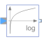
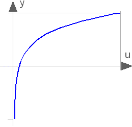

LogOutput the natural (base e) logarithm of the input (input <> '0' required) |

|
Information
This information is part of the Modelica Standard Library maintained by the Modelica Association.
This blocks computes the output y as the
natural (base e) logarithm of the input u. Optionally, the input u can be processed conjugate complex, when parameter useConjugateInput is true. Depending on useConjugateInput the internal signal uInternal represents either the original or the conjugate complex input signal.
y = log(uInternal);
An error occurs if the elements of the input u is zero.

Parameters (1)
| useConjugateInput |
Value: false Type: Boolean Description: If true, input is processed conjugate complex |
|---|
Connectors (2)
| u |
Type: ComplexInput Description: Connector of Complex input signal |
|
|---|---|---|
| y |
Type: ComplexOutput Description: Connector of Complex output signal |
Components (1)
| uInternal |
Type: Complex Description: Equals either u or conjugate complex input u if useComplexInput = true |
|---|